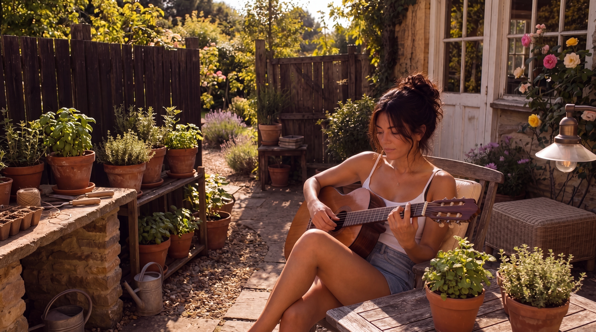

Journal / 3 min
Apparently Writing the Song Was the Easy Bit
A songwriter discovers that releasing music also apparently involves talking about releasing music. Repeatedly.
Read on DarlaQuinn.com ↗DARLA QUINN
Tuning the mood...
Independent singer-songwriter
Honest songs, quiet details, and the kind of melodies that stay with you after the room goes still.
Storytelling through music
Some songs arrive loudly. Others sit beside you and tell the truth softly. Darla Quinn writes from that quieter place — where memory, humour, heartbreak and hope all live in the same room.
 01 / FEATURED
01 / FEATUREDFeatured release
A song about memory, distance, and the versions of ourselves that only exist inside someone else's remembering.
Open Darla Quinn on Spotify ↗“Maybe I don't miss you.
Maybe I miss the version of me you knew.”
Selected songs

The listening room
No hard sell. No noise. Just the songs.
Follow on SpotifyIn her words
Journal / 3 min
A songwriter discovers that releasing music also apparently involves talking about releasing music. Repeatedly.
Read on DarlaQuinn.com ↗Journal / 2 min
A perfectly sensible thought becomes a very large instrument in the house.
Read on DarlaQuinn.com ↗Press / Recognition
An independent catalogue taking shape in public: songs, stories and a distinct visual world built one release at a time.
Current releases
Featured release
Artist journal
The story is still being written.
Independent artist · songwriterPress room
Verified public milestones only. External press features and awards can be added here as they are published.
From Instagram
Stay for a song